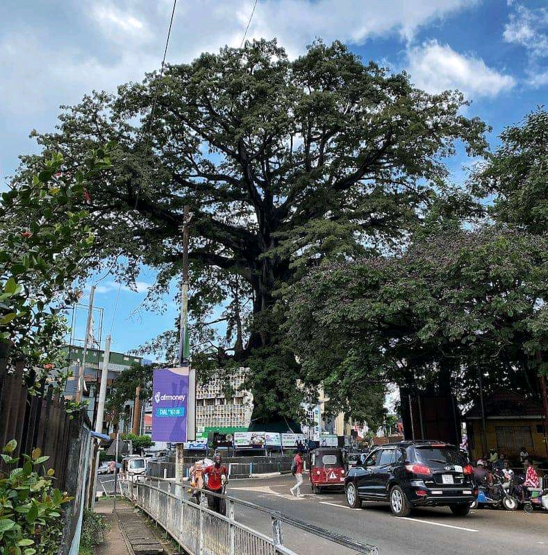
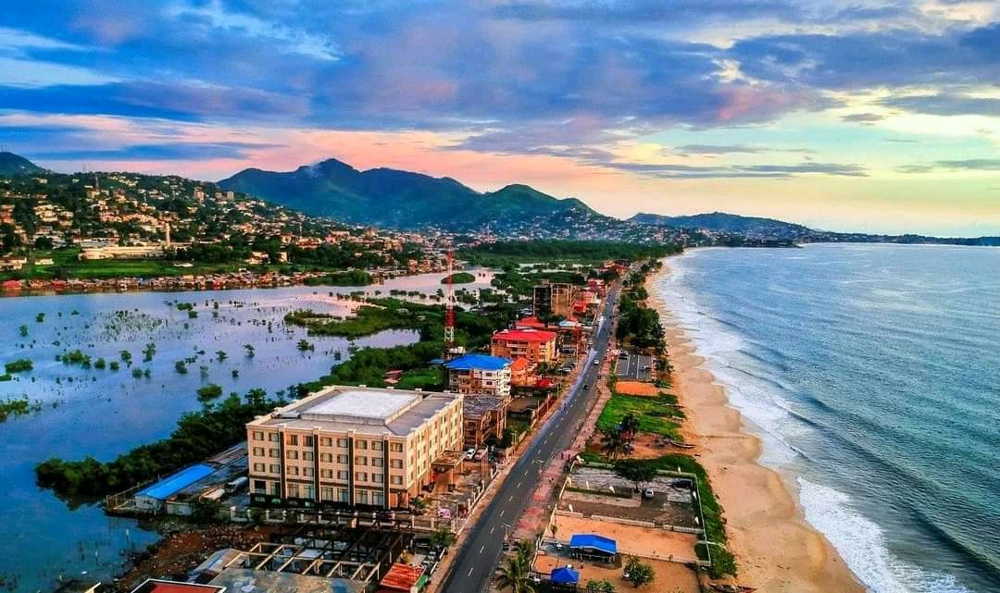
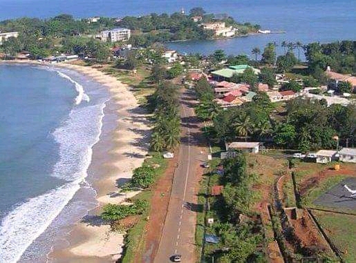
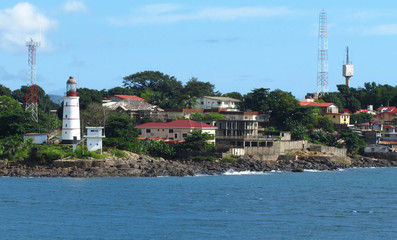
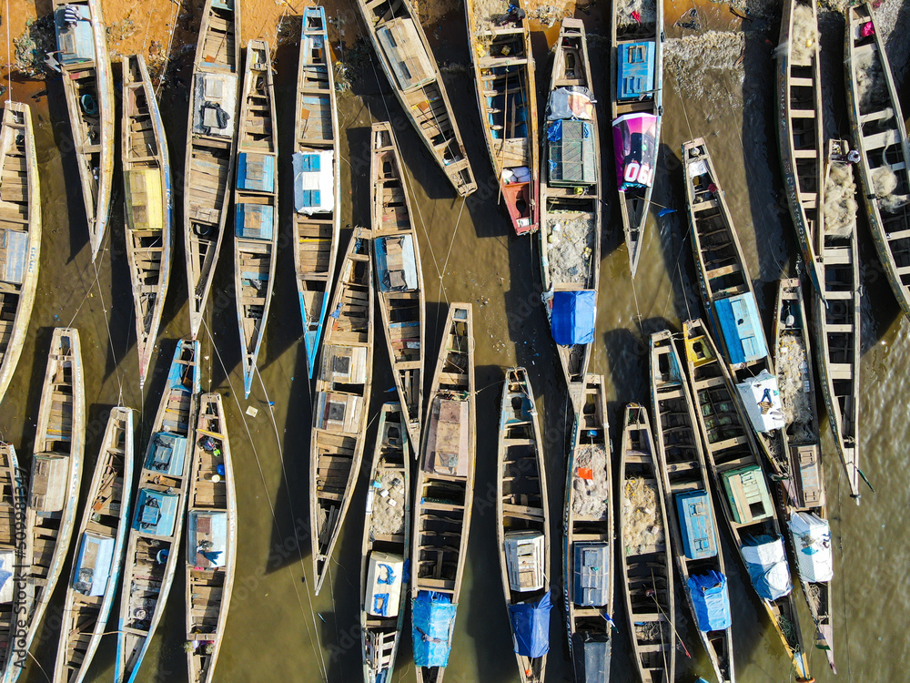

Feetow, cotton Tree

A brief description of the feature.
The Cotton Tree is a kapok, ceiba pentander that is historic of freetown, the capital city of Sierra leone. The cotton tree gained imortance in 1792 when a group of formerly enslaved African Americans, who had gained their freedowm by fighting for the British during the American Revolutionary War.
Lumley Beach

A brief description of the second feature.
Lumley Beach in Freetown, Sierra Leone is a popular public beach that's been a destination for locals for many
Beach Road

A brief description of the second feature.
Lumley Beach Road in Freetown, Sierra Leone is a popular Road use publicly that's been a destination for locals for many
Tourim Area

A brief description of the second feature.
Sierra Leone is a popular of Tourim. with so many islands nice view
Aberdeen, Freetown

A brief description of the feature.
Aberdeen is a coastal neighborhood in the NorthWest part of Sierra Leone's capital Freetown. It is home to numerous up-scale restaurant, hotel, nightclubs and tourist facilities.
Goderich, Freetown

A brief description of the feature.
This are also has it own valume like, the beaches, Schools, and university.
Freetown, National Studium

A brief description of the feature.
The Stadium is name after Sierra Leone's frist president Siaka Stevens, Who signed and approved the budget for the construction.
Funkia, Freetown

A brief description of the feature.
Funkia is a fishing community in the westen Area Rural District Freetown Sierra Leone